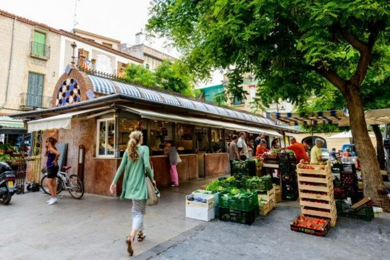

Servei · Mataró
Consta d'un passadís central i una filera de parades de venda a cada costat; per la banda exterior també hi ha parades. El conjunt destaca especialment per la seva volta, que també serveix de…